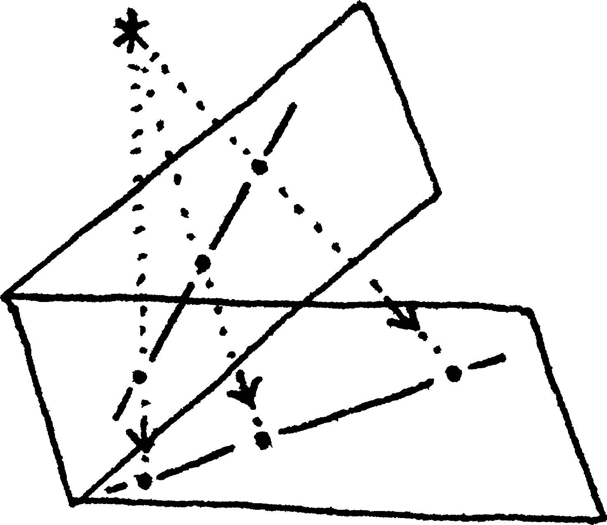
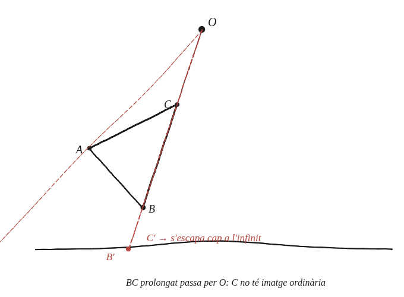

La projecció d'un polígon sempre és un polígon?

Què hem de produir
Una resposta de NO, amb el cas exacte on falla: quin costat del polígon original ha de tenir una propietat concreta —en relació amb el punt de projecció— perquè la seva imatge deixi de ser un segment normal.
Pensa en un sol costat primer
Un costat qualsevol del polígon es projecta, en general, a un altre segment. Però si aquell costat, allargat, passés exactament pel punt de projecció mateix —què li passaria a la seva imatge?
La construcció
Un triangle ABC amb el costat BC prolongat passant exactament pel punt de projecció O.

Tancar-ho
Si la recta que conté un costat passa pel punt de projecció, tots els punts d'aquell costat es projecten des d'ells mateixos —la seva "recta de projecció" és la mateixa recta que ja contenia el costat. En el llenguatge de l'espai projectiu, aquell costat es projecta "cap a l'infinit": dos dels vèrtexs del polígon original es converteixen en un sol punt, o en cap punt ordinari, a la imatge, i el que hauria de ser un polígon tancat de n costats deixa de tancar-se com a tal.
No sempre: si la recta que conté un costat del polígon passa exactament pel punt de projecció, aquell costat no té imatge ordinària —un dels seus vèrtexs "s'escapa" cap a l'infinit i la imatge deixa de ser un polígon tancat normal.
Comprovació
Amb un triangle i un punt de projecció allunyat de qualsevol de les rectes que contenen els seus costats, la projecció és sempre un triangle normal. Movent el punt de projecció fins que quedi exactament sobre la prolongació d'un costat, aquell costat "desapareix" a l'infinit en la imatge: la distància de projecció d'un punt d'aquell costat tendeix a infinit a mesura que el punt de projecció s'hi acosta.
Aquest és el primer lloc del bloc on "un punt se'n va a l'infinit" dins d'una figura real, no com a curiositat abstracta —la mateixa idea que fa que dues rectes en l'espai projectiu es tallin sempre, ordinàriament o a l'infinit.